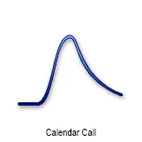
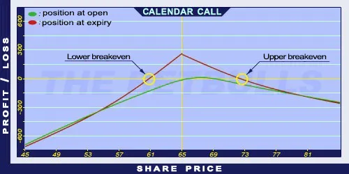

Description and use

A Calendar Call option is a horizontal spread strategy. The two options’ expiration is different and their strike prices are the same. Calendar Call is almost like Covered Call position, but the shares are replaced with a long-duration Long Call option. This step decreases the costs and increases the initial return. Because of the identical strike prices, if the share price rises above the strike price, the Short Call option will be exercised. Then the investor should sell the Long Call option, buy shares for the current market price and then sell them for the strike price. Then another option can be sold the next month. The direction of the market is mixed, neutral/increasing. The investor expects constant increase on the market. The investment is characterised by net debit, because the purchased Call options cost more than the sold Call options. It is a safe investment if the Long Call’s expiration is far (back) and the Short Call’s expiration is close (front), usually one month.
- Type: Neutral, Bullish
- Transaction type: Debit
- Maximum profit: Limited
- Maximum loss: Limited
- Strategy: Income strategy
Opening the Position
Calendar Call Option Positions
- Buy a long term Long Call option.
- Sell a short term Short Call option (same strike price as the Long Call’s).
Steps
Entry:
Make sure the trend is ascending or stagnating at a certain level.
Exit:
- When the share closes above the strike price, the Short Call will be exercised, the investor delivers the shares and receives the premiums.
- If the share price is below the strike price but above the Stop Loss at expiration, then the Short Call option should be left to expire worthless and the received premium should be kept.
- If the share price is below the Stop Loss at expiration then the Long Call option should be sold or the trader should start trading in opposite position.
Basic Characteristics
- Maximum loss: Limited. Cannot be more than the paid debit.
- Maximum profit: Value of Long Call (at the expiry of the Short Call) - net debit.
- Time decay: Time decay has a mixed effect on the value.
- Lower Breakeven point: At the expiry of Short Call, it is the function of the Long Call’s value.
- Upper Breakeven point: At the expiry of Short Call, it is the function of the Long Call’s value.
Advantages and Disadvantages
Advantages:
- Income on a monthly basis.
- The potential return is larger than for a Covered Call strategy.
- The investor can profit from share prices moving within given limits as well.
Disadvantages:
- In case of increasing share prices, it has an upper limit.
- In case of large increase in share prices, it can generate losses.
Closing the Position
Buy back the Short Call option and sell the Long Call option.
Mitigation of losses: Close the position the above-mentioned way.
Example

Calendar Call strategy example
- ABCD is traded for $65.00 on 05.05.2017. The historical volatility is 30%.
- The investor buys a Long Call option which has a strike price of $65.00, expires in January 2006, and costs $12.50 (premium).
- Then the investor sells a Short Call option which has a strike price of $65.00, expires in June 2017, and costs $2.70 (premium).
- Price of the underlying (share price): S= $65.00
- Premium (Short Call): SC= $2.70
- Premium (Long Call): LC= $12.50
- Strike price (Short Call): KS= $65.00
- Strike price (Long Call): KL= $65.00
- Net debit: ND
- Maximum loss: R
- Maximum profit: Pr
- Breakeven point: BEP
Cannot be calculated numerically!